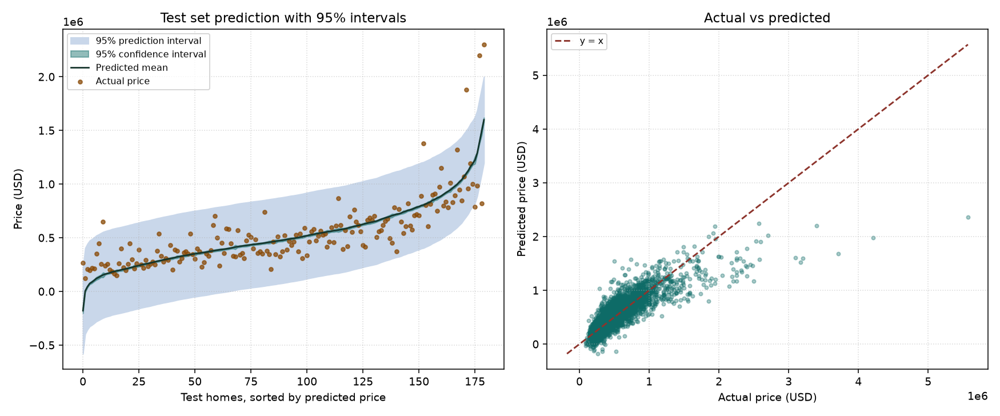

NCHU DIC2 HW2 · CRISP-DM · sklearn
延伸 HW1 的 CRISP-DM 流程。資料是 Kaggle House Sales in King County，18 個原始預測變數。特徵選擇比較 Lasso、Forward SFS、RFE、SelectKBest 與 Permutation Importance，並畫出 95% 信賴區間和預測區間。
五種特徵選擇各自走出 k=1 到全部特徵的路徑，再用訓練集 OLS 重訓、用測試集 MSE 排序。點一組就會套進下面的係數、預測和殘差。
左圖把測試集依預測價格排序。深色帶是平均反應的 95% 信賴區間，淺色帶是新房子的 95% 預測區間，點是實際成交價。右圖是實際價格對預測價格。

| Rank | k | Selected Features | Test MSE | Test RMSE | R-squared |
|---|
| k | 方法 | Selected Features | RMSE | R-squared |
|---|
係數、標準誤、t、p 值與 VIF 來自訓練集 OLS。RMSE 與 R² 是測試集。
| Predictor | Estimate | Std. Error | t | p-value | 95% CI | VIF |
|---|
| Rank | ID | Actual | Predicted | Residual | % Error |
|---|